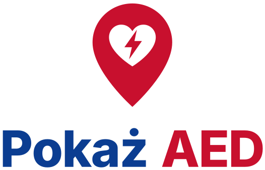

Identyfikacja wizualna akcji zachęcającej dysponentów defibrylatorów do udostępniania danych w portalu dane.gov.pl.
Znak łączy trzy elementy: pinezkę lokalizacji, serce i błyskawicę – międzynarodowy symbol defibrylacji. Pinezka mówi „pokaż, gdzie to jest” – bo AED, którego nie ma w danych, dla świadka zdarzenia nie istnieje. Nazwa „Pokaż AED” jest jednocześnie prośbą do dysponentów i wezwaniem do działania: pokaż swoje urządzenie w otwartych danych. Czerwień ratownicza i szpitalny granat budują skojarzenie z ochroną zdrowia i instytucjami publicznymi, a proste, geometryczne kształty zapewniają czytelność od naklejki na drzwiach po ikonę w aplikacji.
Hasło akcji: „Pokaż AED. Każda minuta się liczy.” · Hashtag: #PokażAED
lokalizacja
życie
defibrylacja
Wersja podstawowa pozioma – stosowana zawsze, gdy to możliwe

Wersja pionowa – formaty wąskie i kwadratowe
Negatyw na czerwieni
Monochromatyczna (druk 1-kolorowy)
Proporcje użycia: biel ok. 70%, granat ok. 20%, czerwień ok. 10%. Zestawienia tekstu: granat i czerwień na bieli spełniają kontrast WCAG 2.2 AA (≥ 4,5:1); biały tekst na czerwieni – AA dla tekstu ≥ 14 pt pogrubionego i większego. Wartości CMYK i Pantone są przybliżone – przy druku należy wykonać proof.
x = połowa wysokości znaku (pinezki). Pole ochronne o szerokości x z każdej strony musi być wolne od tekstu, grafik i krawędzi formatu.
| Wersja | Druk | Ekran |
|---|---|---|
| Pozioma | 25 mm szer. | 120 px szer. |
| Pionowa | 15 mm szer. | 72 px szer. |
| Sam znak | 6 mm wys. | 16 px wys. |
Poglądowo w skali 1:1 (druk)
Nie rozciągaj i nie zmieniaj proporcji
Nie zmieniaj kolorów
Nie obracaj
Nie dodawaj cieni ani efektów
Nie umieszczaj na niejednolitym tle
Nie zmieniaj kroju pisma logotypu
Nie zamykaj w zaokrąglonych kształtach
Nie zmieniaj układu elementów
Aa Ąą Żż
Inter (SIL Open Font License) – krój logotypu i komunikacji. Nagłówki: ExtraBold 800, tekst: Regular 400 / SemiBold 600.
Krój bezszeryfowy o wysokiej czytelności na ekranach i w małych rozmiarach, z pełnym zestawem polskich znaków diakrytycznych.
Masz defibrylator?
Pokaż go.
Udostępnij dane na dane.gov.pl – każda minuta się liczy.
Tu jest AED
Ten defibrylator jest widoczny w otwartych danych dane.gov.pl · #PokażAED